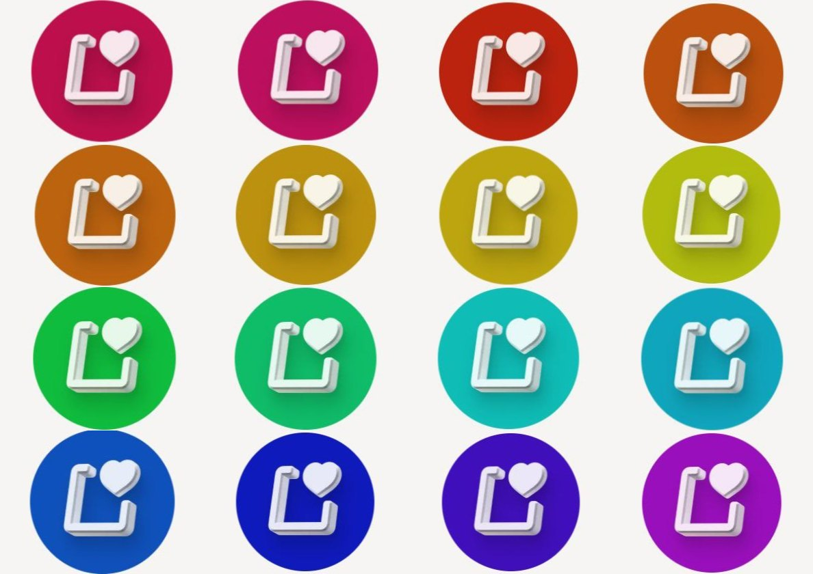
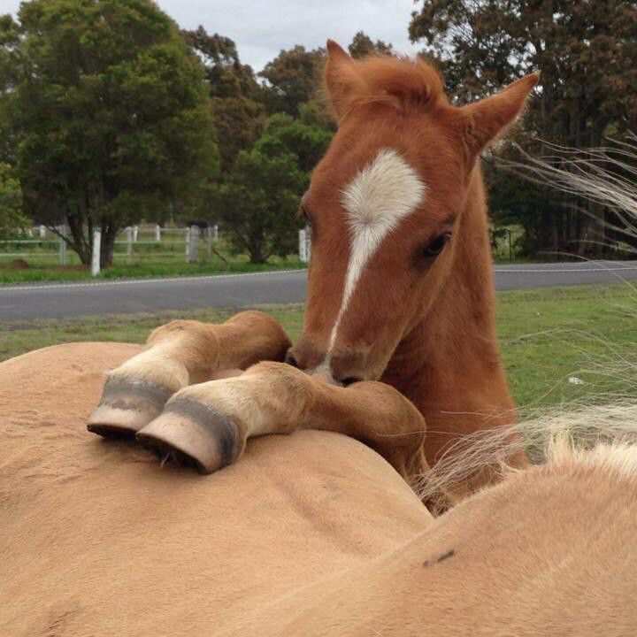

У меломанов нет вкуса?
Меломаны- люди, которые любят музыку различных стилей, но почему кто-то думает, что у них нет своего мнение о той или иной песне. Поверьте, меломанам тоже может не нравиться какая-то музыка
Детская игра или инструмент для новичка-архитектора?
Знаете игру Sims4? В популярном симуляторе жизни можно не только "жить", но строить невероятные здания. Сама столько раз увлекалась этим, что начинала чувствовать себя архитектором. Да, считаю, что это отличная возможность для тех, кто хочет попробовать себя в создании домов, квартир, ландшафтов и много другого. А если понравиться, можно переходить на программы посерьёзнее!

Лошади и диабет
Лошади - удивительные животные, верные, умные. При чём тут диабет? Интересный факт: люди, работающие с лошадьми, на 50% реже болеют диабетом. Как так? Всё просто: лошади помогают снижать стресс, который влияет на уровень сахара в крови.
